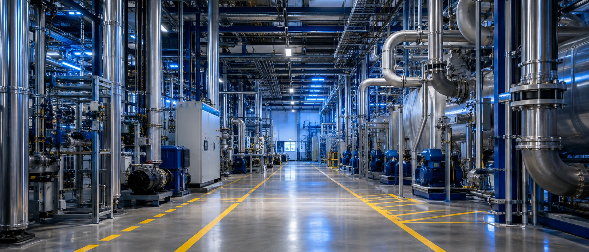
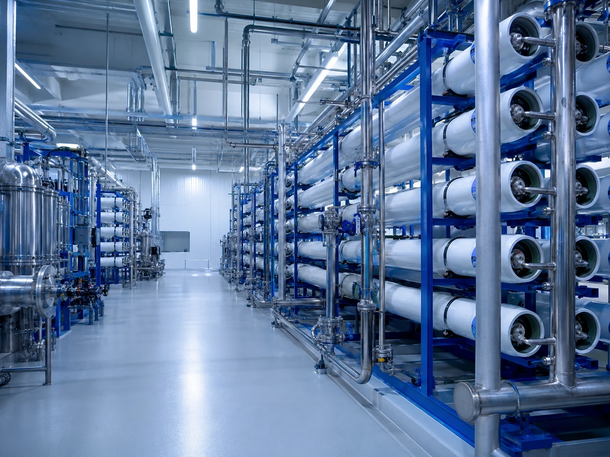
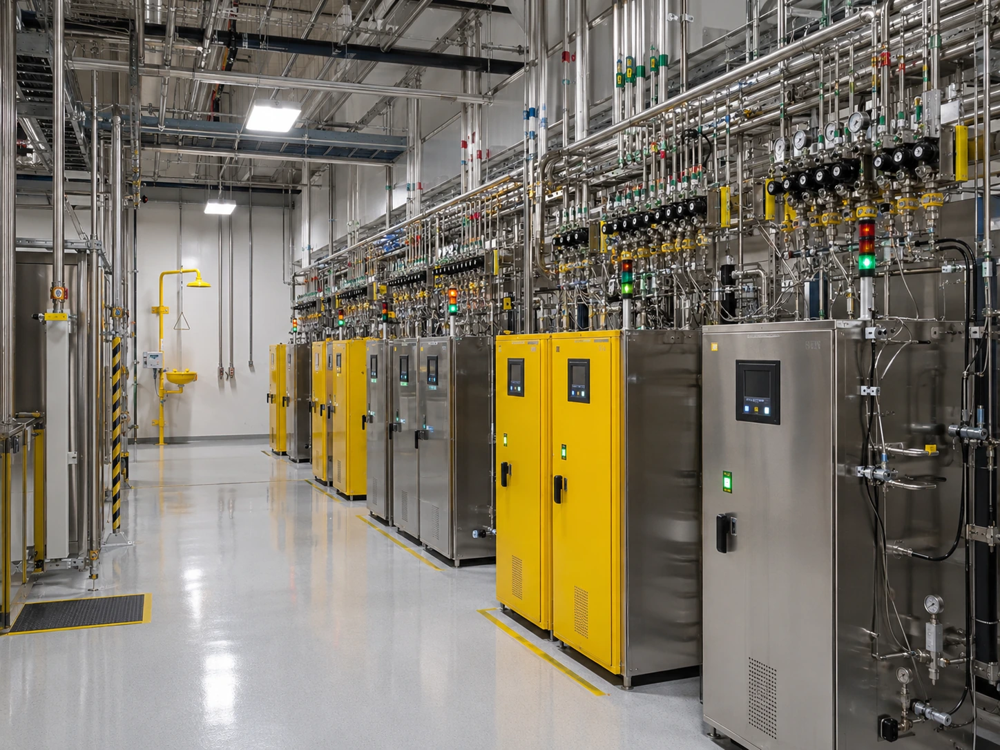

UPW・Specialty Gas・MEP
The bloodstream and breath of the process — ultrapure water, gases, power and HVAC: complete planning and construction management from the B1 sub-fab to the RF rooftop mechanical level.

SCOPE · Scope of services
What we take on
S-01
UPW ultrapure water system
Water quality designed to 18.2 MΩ·cm; system planning and construction management for pretreatment, RO, EDI and the polishing loop.
S-02
PCW process cooling water
Heat recovery and hydraulic balancing of the process cooling water loop, holding temperature and flow steady at the tool.
S-03
Bulk gas systems
N2, O2, Ar and H2 supply planning with on-site nitrogen generation studies, including storage, vaporization and purification facilities.
S-04
Specialty gas supply
Gas cabinet and VMB／VMP layout, double-containment piping and leak detection system design and site supervision.
S-05
CCSS chemical supply
Central chemical supply system: tanker unloading, dilution and blending, and point-of-use distribution planning and acceptance.
S-06
Power systems
Design integration and procurement management for HV／LV distribution, UPS, emergency generation and power quality improvement.
S-07
HVAC and exhaust
MAU／AHU air systems plus duct routing and load design for segregated acid-alkali, organic and heat exhaust.
S-08
Fire protection and safety
Planning and review of cleanroom-rated fire protection, gaseous suppression systems and utility safety interlocks.
SUB-FAB · Sub-fab level
The sub-fab is the engine room of the whole plant.
The B1 pipe corridor carries UPW, specialty gas, chemical and power mains, each aligned to the drop ports of the cleanroom tools above— a misaligned port means expensive re-piping later. TeraFab integrates every system route in BIM at the design stage, reserving maintenance space for pumps, purifiers and valve boxes so that later servicing never stops the line.


TITLESub-fab pipe corridor
SYSTEM MEP
LEVELB1 −7.20 Sub-fab
TIMECODE TC00:00 / 00:08
METHOD · How we execute
How a turnkey consultant works
01
Requirement definition
Inventory tool utility demand (water, gas, power, exhaust loads) and set the design basis and capacity margin.
02
Design integration
Coordinate corridor routing and drop-port alignment in BIM; complete basic and detailed design for every system.
03
Procurement and construction management
Specifications, vendor selection and full-term supervision for the UPW, specialty gas and power distribution packages.
04
Testing, certification and handover
Line flushing and passivation, water quality and gas purity verification, TAB balancing and as-built document handover.
18.2MΩ·cm
UPW resistivity design standard
<1ppb
TOC control target
N+1
Power and utility redundancy
7×24
Uninterrupted supply design
＊Figures indicate planning and design capability (based on the FAB-1 case drawings); actual specifications are set by project requirements.
INTERFACE · Related systems
Utility systems are not islands
Upstream they meet external supply, downstream the cleanroom and environmental treatment—those interfaces are exactly where a turnkey consultant earns its place.
Need to assess utility capacity or plan an expansion?
From UPW to power redundancy, TeraFab acts as your turnkey consultant to audit current capacity and map the expansion path.
Start a project